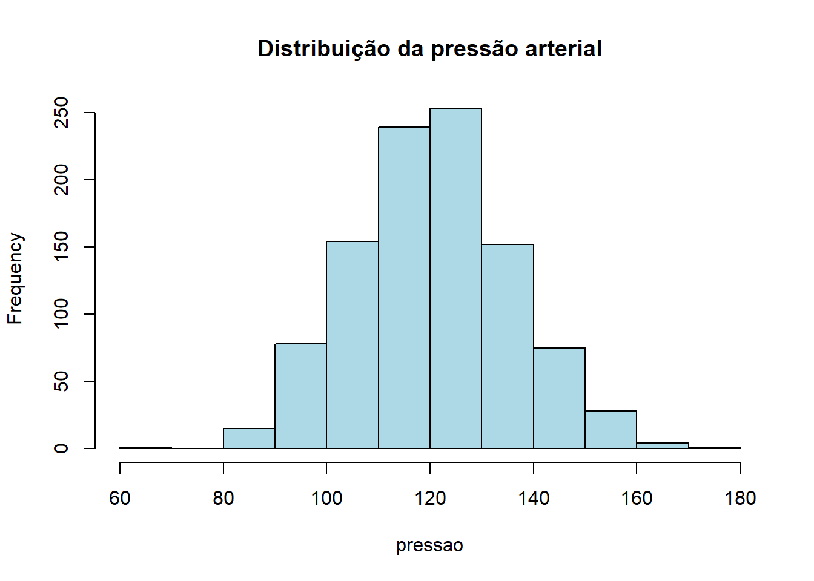
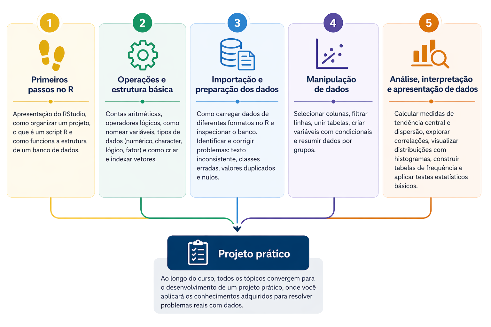
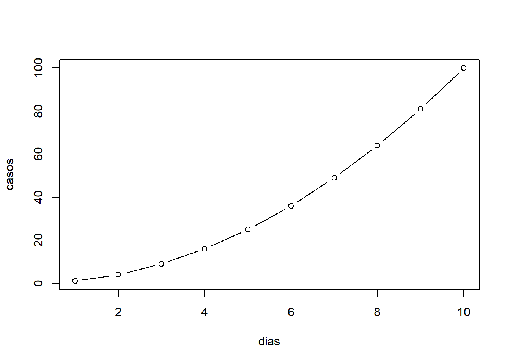
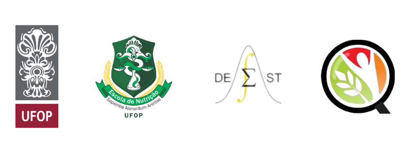

pressao <- rnorm(1000, mean = 120, sd = 15)
hist(pressao, col = "lightblue", main = "Distribuição da pressão arterial")
R é uma linguagem e ambiente computacional voltado à análise estatística de dados. Trata-se de um software livre, desenvolvido a partir da linguagem S, que oferece ferramentas robustas para manipulação, visualização e modelagem de dados.
Este curso é uma iniciativa de extensão do Grupo de Pesquisa e Ensino em Nutrição e Saúde Coletiva (GPENSC) da Universidade Federal de Ouro Preto, voltada para profissionais e estudantes da área da saúde que desejam dar os primeiros passos na análise de dados com o software R. A proposta parte de situações práticas do contexto epidemiológico, permitindo que o participante desenvolva habilidades reais de organização, manipulação e interpretação de dados em saúde.
Ao final do curso, você será capaz de:
O conteúdo está organizado em módulos progressivos, combinando teoria e prática com exemplos reais, e está dividido nos seguintes tópicos:

As demonstrações utilizam dados simulados, inspirados em situações epidemiológicas reais, com o objetivo de facilitar o entendimento dos conceitos apresentados.
Simula medições de pressão arterial de vários pacientes e mostra como esses valores se distribuem. Útil para identificar o que é comum e o que foge do padrão.
pressao <- rnorm(1000, mean = 120, sd = 15)
hist(pressao, col = "lightblue", main = "Distribuição da pressão arterial")
Compara níveis de glicemia entre dois grupos (por exemplo, com e sem intervenção) e verifica se a diferença observada pode ser considerada real.
dados <- data.frame(
grupo = rep(c("Controle", "Tratamento"), each = 50),
glicemia = rnorm(100, mean = rep(c(100, 90), each = 50))
)
t.test(glicemia ~ grupo, data = dados)
Welch Two Sample t-test
data: glicemia by grupo
t = 49.26, df = 97.6, p-value < 2.2e-16
alternative hypothesis: true difference in means between group Controle and group Tratamento is not equal to 0
95 percent confidence interval:
9.620362 10.428071
sample estimates:
mean in group Controle mean in group Tratamento
100.04602 90.02181 Simula 5 coletas diferentes de pacientes e calcula a média de cada uma, mostrando como os resultados podem variar entre amostras, mesmo em condições semelhantes.
medias <- numeric(5)
for(i in 1:5){
medias[i] <- mean(rnorm(100, mean = 100))
}
medias[1] 100.18322 99.95620 100.05088 99.95696 100.00550Representa a evolução de casos ao longo do tempo, ajudando a visualizar tendências de crescimento em um acompanhamento epidemiológico.
dias <- 1:10
casos <- dias^2
plot(dias, casos, type = "b")
Agradeço à Profa. Raquel de Deus Mendonça pelo convite, à Profa. Ariene Silva do Carmo pela idealização do projeto, ao Prof. Tiago Martins Pereira pela autorização para uso dos códigos na elaboração do material e ao Prof. Fernando Luiz Pereira de Oliveira pela revisão. A participação de todos foi fundamental para a realização deste curso.

BATTISTI, Iara Denise Endruweit; SMOLSKI, Felipe Micail da Silva (orgs.). Software R: Análise estatística de dados utilizando um programa livre. Bagé: Faith, 2019. Disponível em: http:// www.editorafaith.com.br/ebooks/grat/978-85-68221-44-0.pdf.
COSTA, Maria Fernanda F. Lima et al. The Bambuí health and ageing study (BHAS): methodological approach and preliminary results of a population-based cohort study of the elderly in Brazil. Revista de Saúde Pública, v. 34, p. 126-135, 2000.
LIMA E COSTA, Maria Fernanda F. de et al. Projeto Bambuí: um estudo epidemiológico de características sociodemográficas, suporte social e indicadores de condição de saúde dos idosos em comparação aos adultos jovens. Informe epidemiológico do SUS, v. 10, n. 4, p. 147-161, 2001.
WICKHAM, Hadley; ÇETINKAYA-RUNDEL, Mine; GROLEMUND, Garrett. R for Data Science. 2. ed. Disponível em: https://r4ds.hadley.nz/.